Geospatial Analysis
Basic raster operations
Helena Mitasova
GIS/MEA582 Geospatial Modeling and Analysis NCSU
Learning objectives
- Explain global and zonal statistics
- Define neighborhood operations
- Understand raster map algebra
- expressions, operators, functions and variables
- basic calculations, integer and floating point data
- "if" conditions, handling NULLs and creating masks
- Define raster mosaicking and patching
- Explain raster map reclassification and rescaling
Summary statistics
Continuous raster data:
- stored numbers are values quantifying the phenomenon
- univariate statistics: min, max, mean, standard deviation, median
- histogram (requires discretization into bins)
Can be applied as global, zonal, or focal operations
Summary statistics
Discrete raster data:
- stored numbers can be values (quantitative data) or category numbers (qualitative data)
- values apply to an area rather than grid cell
- univariate statistics can be applied only to quantitative attributes
- mode (most frequent cat), diversity (number of different cats) apply to category data
Can be applied as global, zonal, or focal operations
Global statistics: continuous data
- Map layer to number(s)
- Compare elevation data from different sources using mean, standard deviation and histogram
- Identify data anomalies and potential artifacts
Global statistics: continuous data
 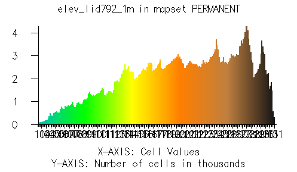
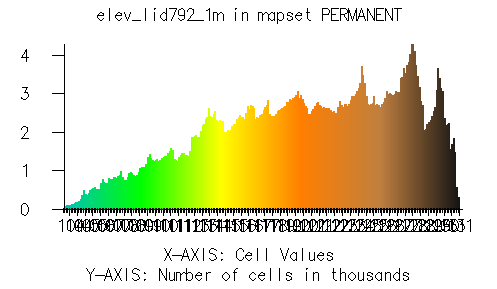
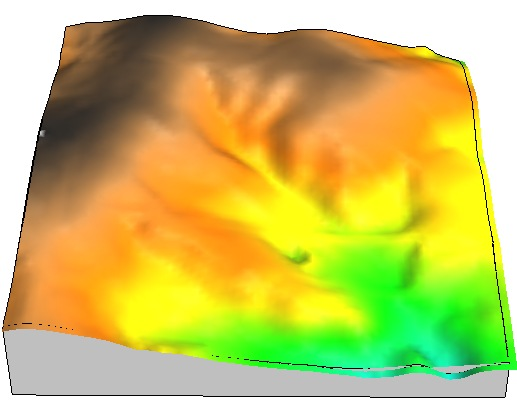 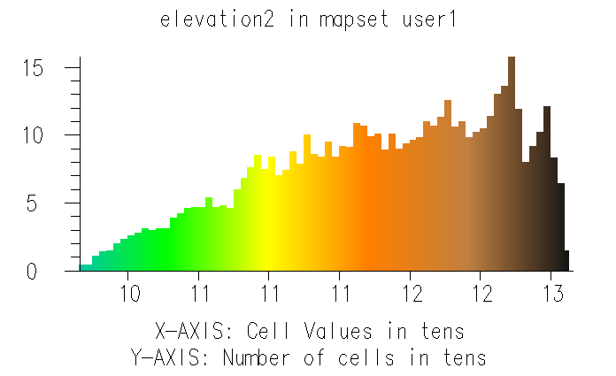
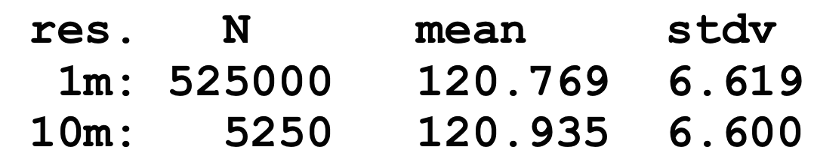
Global statistics: continuous data
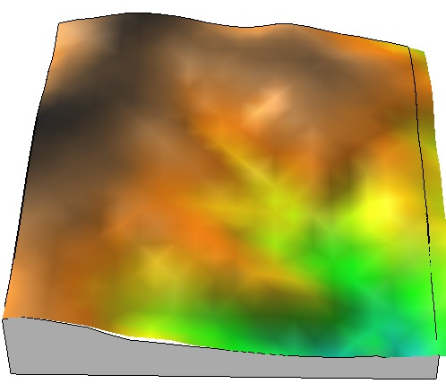 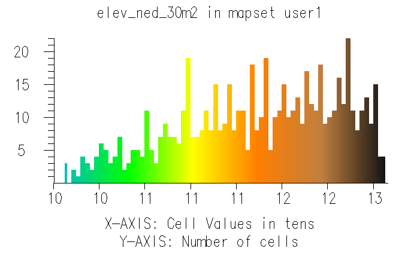
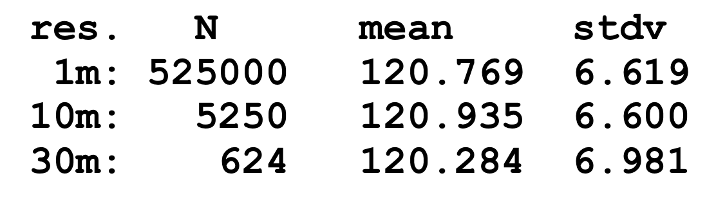
Global statistics: continuous data
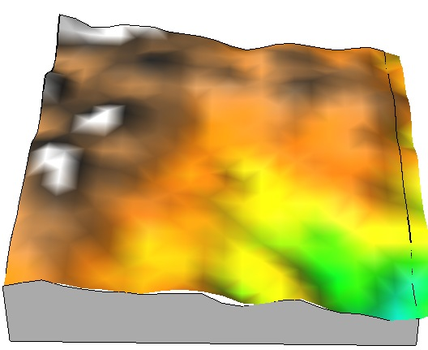 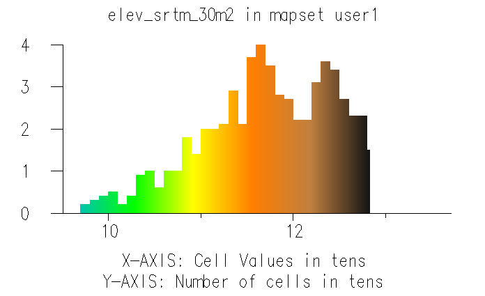
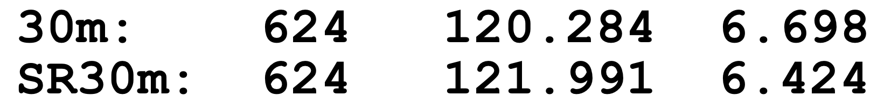
Global statistics: continuous data
Elevation from different sources: correlation matrix
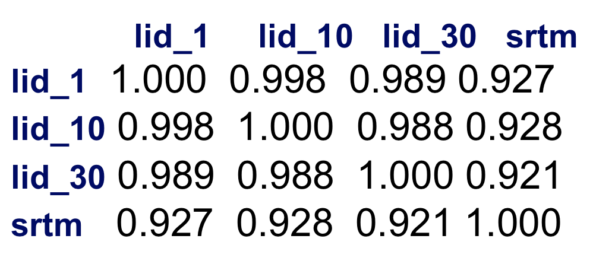
Global statistics: discrete data
Map layer to number(s)
Soil properties: soil erodibility mean 0.248
Soil type ID: mode (most common soil type) 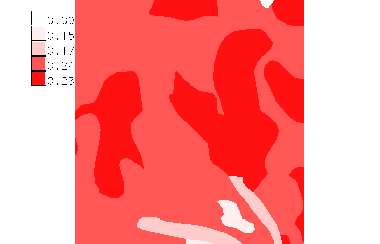 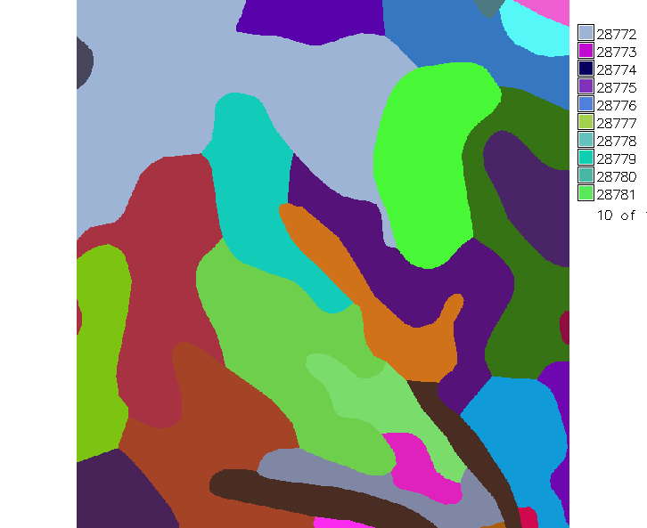
Zonal statistics: continuous data
- Agregates continous data to discrete areas
- Hydrology example: mean slope for watersheds to estimate how fast water moves through it

 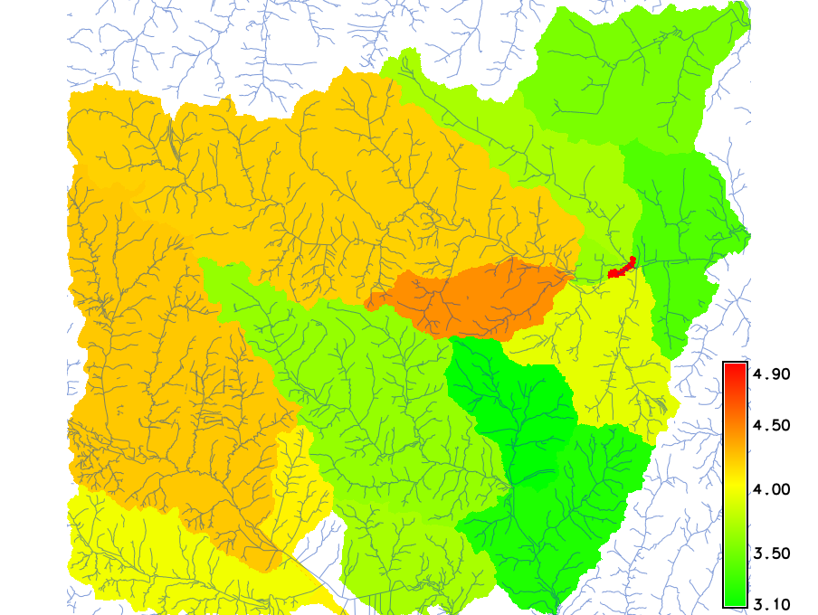
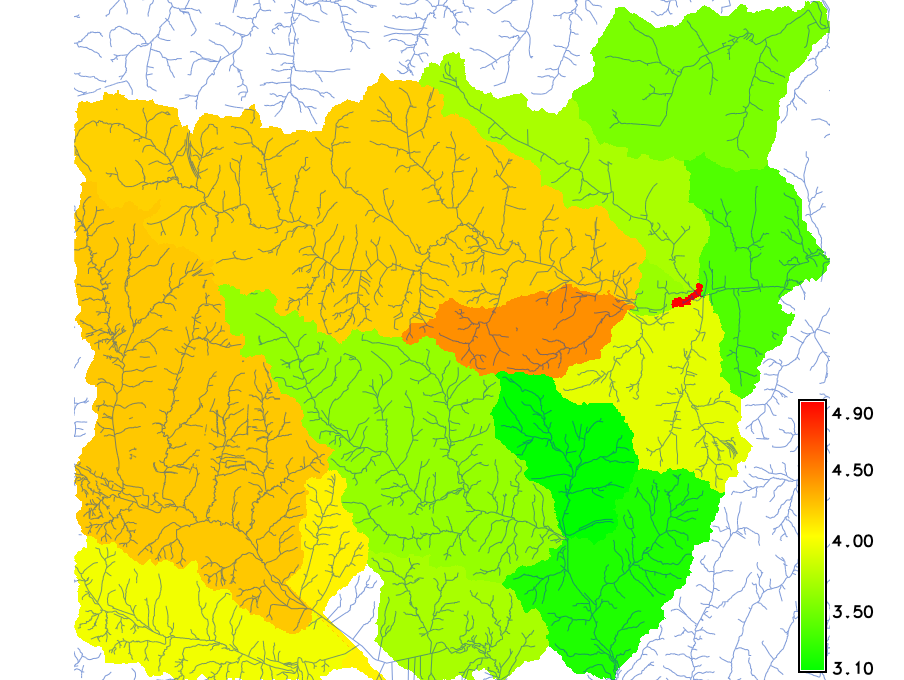
Watersheds (discrete), Slope (continuous), Mean slope for wach watershed (discrete)
Zonal statistics: category data
- Agregates discrete data to discrete areas
- Land use analysis example: map prevailing land cover for each zipcodes
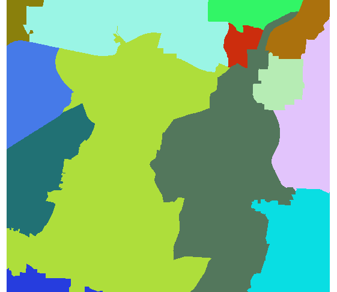 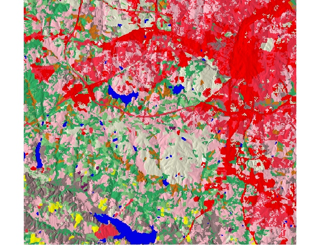 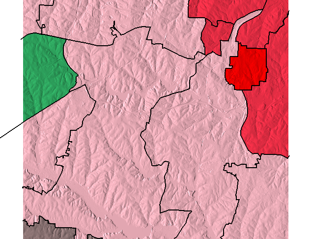
Zipcode areas(discrete), land cover (discrete), most common land cover (discrete)
Neighborhood operations
- Focal operations: value at a grid cell is function of the values at neighboring grid cells
- Grid cell neighborhood is defined by a moving window, square or circular
- Same rules apply for continuous and discrete data as for global and zonal stats
- Basic univariate statistics, filters, image processing
Neighborhood operations: smoothing
Smoothing noise in DEM: focal mean with 5x5 window
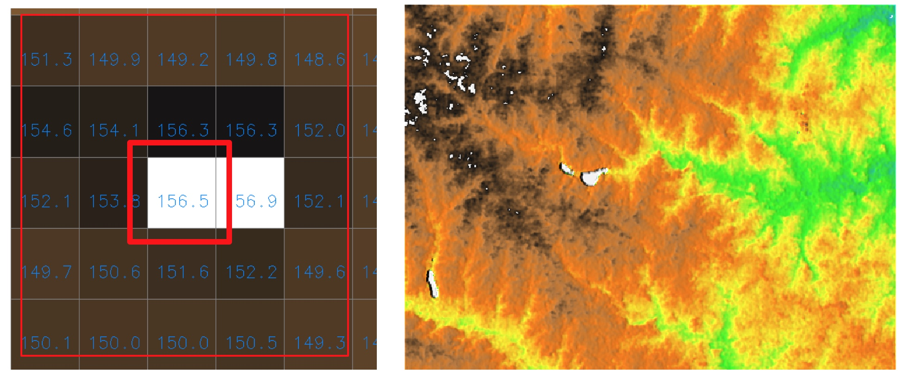
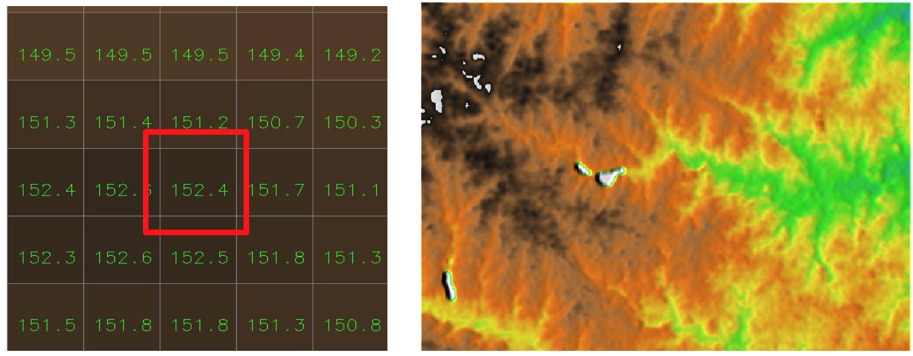
Neighborhood operations: diversity
Number of different LU classes in 7x7 window
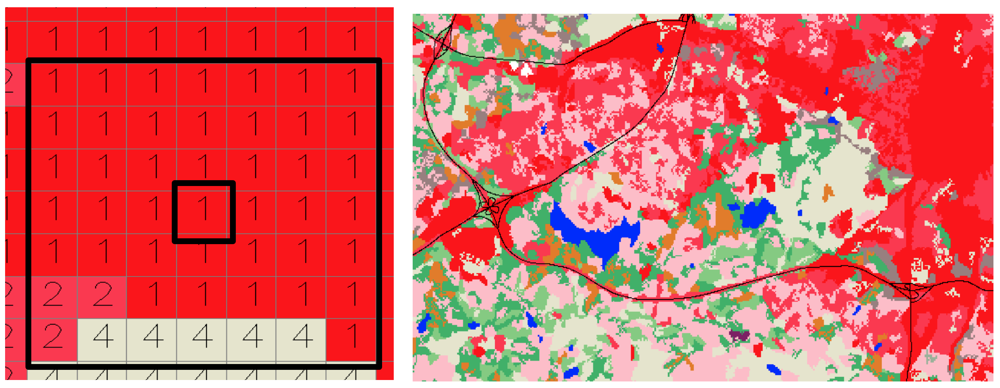 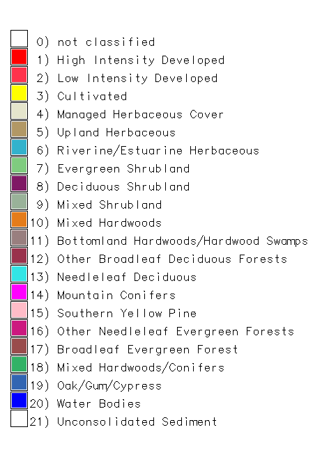
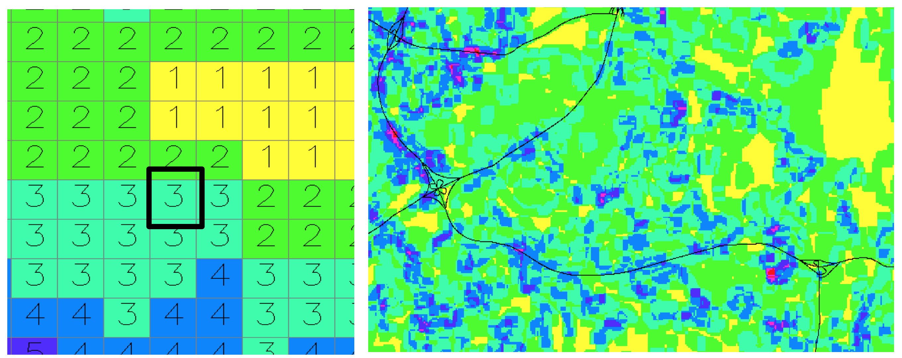 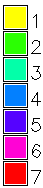
Raster map algebra
Computes a new raster map using an expression built by applying logical and/or arithmetic operators, or mathematical functions to existing raster maps:
newmap = expression (map1, map2, ...map3)
Local operation: Expression is applied on per-cell basis
Raster map algebra
Each software has its own syntax, operators and functions:
- Logical operators and functions:
- less than, equal,
- and, or, not, ...;
- if(x), if(x,a,b)
- Arithmetic Operators
- +, -, *, /
- Mathematical Functions:
- exp(x,y),sin(x),log(x)
- min(x1,x2,..), max(), median()
Raster map algebra: logical expressions
- apply to both continuous and discrete (category) data and their combination
- use for complex reclassification, masking and overlays
- Example: find all forested areas with elevation > 120m use more meaningful example
GRASS GIS expression highforest = "if(landclass96==5 && elevation > 120., elevation, null())”
ArcGIS expression ADD
Image composit: see slide 30
Raster map algebra: arithmetics
- Integer and floating point matters for arithmetic expressions:
- F(map1_int, map2_int) -> map_int
- F(map1_int, map2_fp) -> map_fp
- Example: compute ndvi index from Landsat integer maps
- ndvi=(tm4-tm3)/(tm4+tm3)
- ndvi=float(tm4-tm3)/float(tm4+tm3)
- ndvi=1.*(tm4-tm3)/(tm4+tm3)
Raster map algebra: int and fp
example slide 25
Raster map algebra: math functions
better example?
Example: for all forested areas, compute sediment transport capacity using the following equation
equations
GRASS GIS expression sediment = "if(landclass96==5, exp(contrib_area,1.5) * sin(slope), null())”
ArcGIS expression ADD
Image composit: create new
Raster map algebra: null data
- Raster maps can include NULL data (no-data), each software has its own rules how to handle them in map algebra operations
- General rule: If a cell is null in at least one map (variable) then it is null in the resulting map
- "If “ statements can test for null and/or assign a cell null value based on the if condition
- Special operators can be implemented to extend the rules applied to nulls
More raster map algebra
learn more in assignments and in manuals
Patching and Mosaicking
Reclassification and rescaling
Summary
- global and zonal statistics
- neighborhood operations
- map algebra